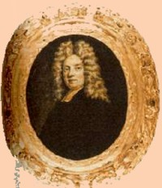

Everardus Bogardus
Everardus Bogardus (occasionally Everhardus) was a legendary Dutch Reformed cleric of the New Netherland era. He was the husband of Anneke Jans. Their children would establish the surname Bogardus across the colony of New York and beyond.
He was born in Utrecht in 1607 and educated in theology at the University of Leyden. Born "Evert Bogert," he reputedly "latinized" his name about the time of his ordination in 1631. He emigrated to New Netherland in 1633 to serve as the Dutch Reformed minister in New Amsterdam. In 1638, he married the widow Anneke Jans - an even more legendary historical character!
His sixteen-year-tenure in New Amsterdam came at a formative time for his church and the settlement as well. He played a leading role in both. He has been called the first "stable" minister of the New Netherland Dutch church. However, this sketch will confine itself to his Albany context.
In 1647, he sailed for Holland on business. Barely forty-years-old, Everardus Bogardus died in 1647 while en route to Europe. He is said to have been lost at sea - perhaps off the coast of Wales. His widow and their children then relocated to Beverwyck where she died in 1663. Several of his descendants became residents of Albany.
Online resources: Begin with a Google.com search of his name. Wikipedia; Sketch from "Famous Americans"; Genealogy from HMGFM; article from Church History (1933); perhaps the latest (2007) word by Willem Frijoff and sources cited therein.
Portrait: Variants of this image have been used to represent Bogardus for many years. Many adapted versions have been utilized in publications and also presented online. The explanation offered by Willem Frijoff appears most creditable. We do acknowledge that the adapted image accompanying this sketch is likely not of its subject.